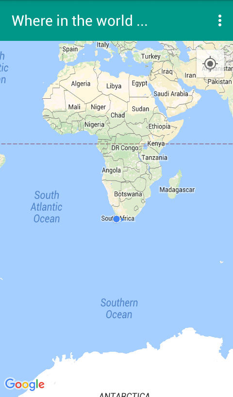

Where in the World is a Google Maps tutorial implemented in a simple Android application. It started as a simple project between developers wanting to learn more about Android development. The app is not meant to be all that useful but it allowed us to learn and understand the mobile development pipeline. How you decide to use it is up to you. We hope you give it a try:

- Travel - Explore the map and plan your adventures.
- Direction - Lost and need a quick reference point to where you are.
- Educational - Use the map to see your neighboring countries, states and provinces in relation to your current position.
- Share your location - Take a screenshot while using the app an send it to a friend or family member.
Our motivation for creating this app was to learn how to incorporate maps into an mobile app. Learn with us. Our code is open source. Visit our GitHub repository clone, comment or report issues.
Watch this space for more apps from Digital Art Thingy Inc.